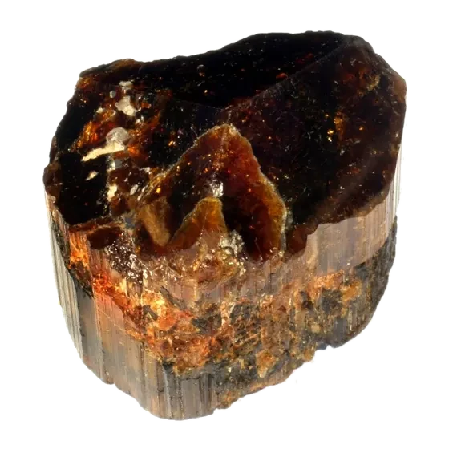
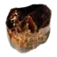

Mineral Grimoire

Brown TourmalineAppearance
Brown to dark brown, translucent to opaque, striated prismatic crystal. Also known as Dravite.
Origin
Brazil, United States, Afghanistan, Pakistan, Sri Lanka, Myanmar, Madagascar
Attributes
Brown Tourmaline (Dravite) is an excellent grounding stone, clearing and opening the earth chakra and the grounding cord holding the physical body in incarnation. It clears the aura, aligns the etheric body, and is protective.
This stone encourages community spirit and social commitment. It makes one feel comfortable in a group. Brown Tourmaline is beneficial for sexuality and emotional dysfunction.
Healing
Brown Tourmaline treats intestinal disorders and skin diseases. It stimulates regeneration in the whole body.
Position
Place on the earth chakra or wear as appropriate.
Spellworking
Brown Tourmaline provides excellent grounding while clearing negative energies. Use it for earth connection, community harmony, and stabilizing your energy. Like all brown stones, it's particularly effective for grounding and physical matters. Also beneficial for sexuality and emotional healing.